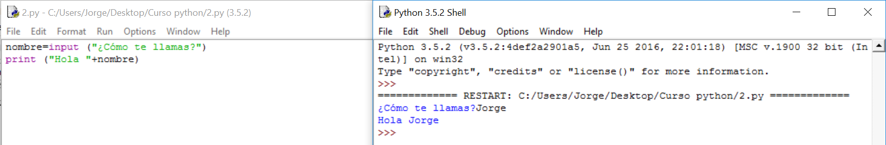

Solución
Algoritmo:
1.- Pedimos el nombre. No sabíamos hacerlo hasta ahora, anteriormente sólo hemos mostrado texto sin esperar respuesta, como la necesitamos, usaremos input .
2.- Anotamos ese nombre. Si estuviéramos hablando con alguien, lo guardaríamos en un trozo de nuestra memoria y asociaríamos su cara a su nombre. El ordenador hace lo mismo pero no puede asociar caras, así que , en vez de asociar su cara, le pone un nombre. No sabíamos hacerlo hasta ahora pero ya conocemos los tipos de variable y cómo se asignan sus valores.
3.- Saludamos con lo que hemos anotado. Eso ya intuimos que será con la orden print porque eso ya sabemos hacerlo.
Solución:

Análisis del programa:
nombre=input("¿Cómo te llamas?") Esta línea es la que hemos empleado para guardar el nombre. En este caso, nombre es una variable a la que se le asigna (por medio de =) lo que escriba el usuario. Input viene del inglés y se traduce como: conjunto de datos que se introducen en un programa o sistema informático. En este caso, input pone al ordenador a la espera de recibir texto del teclado. En resumen, la línea entera guarda lo que el usuario escriba en una variable, que ocupará una parte de memoria del ordenador, y a la que nos podremos referir siempre con ese nombre.
print ("Hola, "+nombre) Como vimos en el programa anterior, la función print puede sacar por pantalla tanto texto como variables o una mezcla de los dos. Éste es el último caso. Observad que hay un espacio detrás de la "," ya que, si no, lo pondría todo junto. El ordenador no sabe lo que queda bien o mal en un texto.
Comentarios:
- No le hemos dicho de qué tipo de variable estamos hablando. Él, por su cuenta, habrá decidido una. Sabemos que será una Cadena de caracteres por venir de una respuesta a un input. La ventaja en Python es que él decide qué tipo de variable utiliza sin que la declaremos y nos ahorra alguna línea que otra. La desventaja es que, para saber de qué tipo es, habrá que preguntarle.
-Debemos elegir los nombres de las variables de forma que nos den una idea de los datos que contienen. Favorecerá la lectura de nuestros programas.